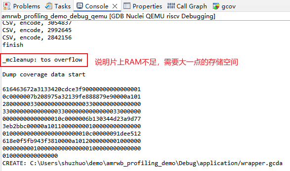
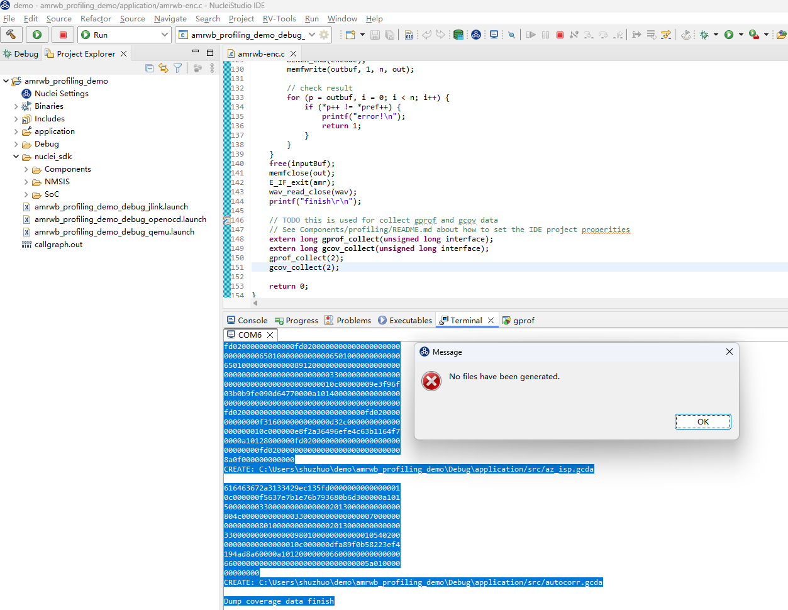
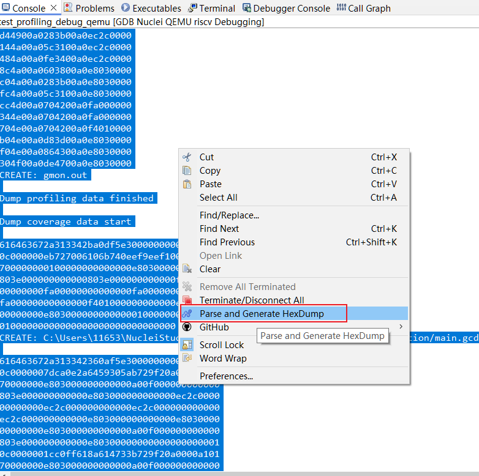
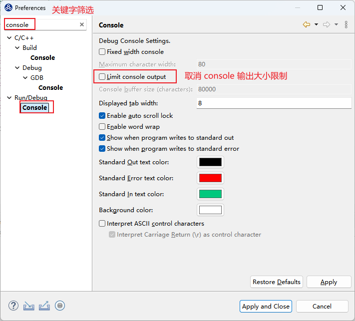
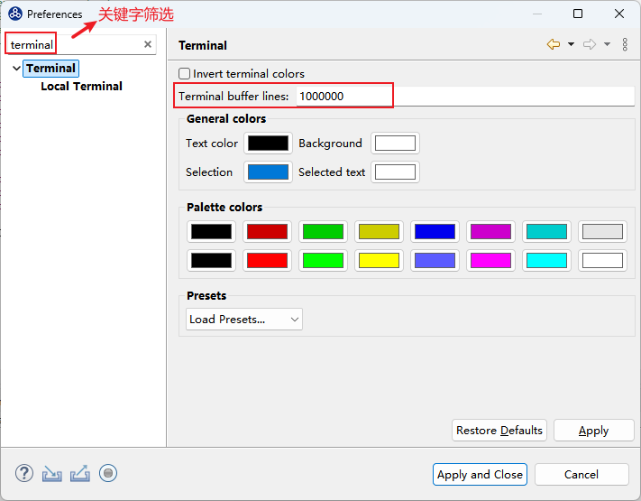
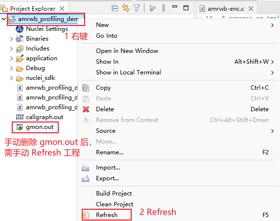
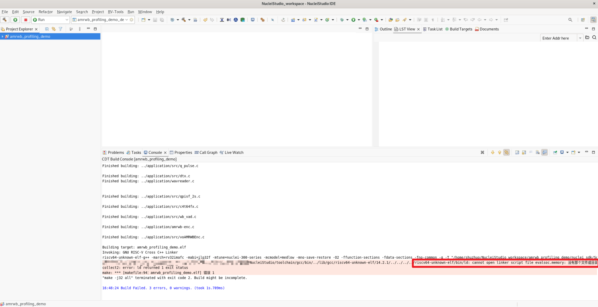
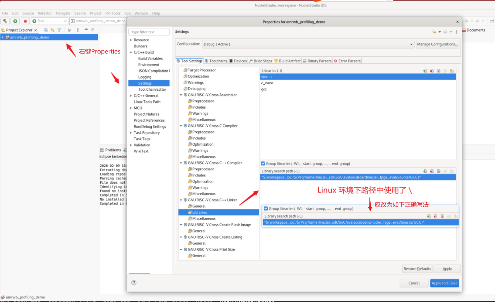

Issues You May Encounter When Using the Profiling Feature¶
You may encounter some issues when using the Profiling feature. They are documented below:
- Issue 1: The log output reports insufficient on-chip memory, meaning there is not enough memory to store gprof/gcov data
- Issue 2: When collecting data via serial port output, the printed output is overwritten/truncated, so the data collected in the Console or Terminal is incomplete, causing data parsing to fail and a
No files have been generatederror dialog to pop up - Issue 3: After deleting the
gmon.outfile, parsing again triggers aNo files have been generatederror dialog
Issue 1: The log output reports insufficient on-chip memory, meaning there is not enough memory to store gprof/gcov data¶
gprof/gcov data needs to be stored in on-chip memory. The amount of memory required depends on the size of the use case (ranging from tens to hundreds of KB), so make sure the on-chip memory is large enough.

Solution¶
First, make sure the memory size configured in the software matches the actual hardware size (ilm/sram/flash/ddr/). Otherwise, you need to adapt the memory layout in the software linker script:
For example, if downloading in DOWNLOAD=ilm mode, you can adapt it according to the actual ilm and dlm sizes of the hardware.
For nuclei sdk 0.6.0, the file to modify is nuclei-sdk/SoC/evalsoc/Board/nuclei_fpga_eval/Source/GCC/gcc_evalsoc_ilm.ld
INCLUDE evalsoc.memory
MEMORY
{
ilm (rxa!w) : ORIGIN = ILM_MEMORY_BASE, LENGTH = ILM_MEMORY_SIZE
ram (wxa!r) : ORIGIN = DLM_MEMORY_BASE, LENGTH = DLM_MEMORY_SIZE
}
If DOWNLOAD=ilm mode does not provide enough memory, you can use a download mode with more memory (such as DOWNLOAD=ddr).
Issue 2: Data parsing fails because the data collected in the Console or Terminal is incomplete¶
In NucleiStudio 2024.06, when using the Profiling feature with serial port output, parsing the data with Parse and Generate Hexdump may
pop up a No files have been generated error dialog, and the corresponding gmon.out file or *.gcno file is not generated in the end. This may be because the serial port data was overwritten/truncated, resulting in incomplete data and parsing failure.

How to confirm:
Make sure the initial output printed at the start of the serial port session has not been overwritten/truncated. Refer to An Example Demonstrating Performance Tuning with the Profiling Feature in Nuclei Studio

Solution¶
The Console and Terminal limit the number of output lines. When the output length exceeds the limit, the earlier content is overwritten/truncated, making the content incomplete and causing parsing to fail.
You need to increase the output size limit of the Console or Terminal to ensure that data is not overwritten/truncated.
- It is recommended to set the Console output limit to unlimited.
Go to Window->Preference to open the following interface:

- It is recommended to set the Terminal output limit to a larger value.
Go to Window->Preference to open the following interface:

Issue 3: After deleting the gmon.out file, parsing again pops up a No files have been generated error dialog¶
After manually deleting the gmon.out file in the project folder, parsing again shows a No files have been generated error dialog.
Solution¶
After manually deleting the gmon.out file, you need to manually refresh the project.

Issue 4: Compilation error when importing amrwb_profiling_demo.zip in Nuclei Studio on Linux¶
The use case created in the document "Issues You May Encounter When Using the Profiling Feature" has a problem, causing a compilation error when importing amrwb_profiling_demo.zip into Nuclei Studio on Linux.
The specific error is: evalsoc.memory: No such file or directory

Cause: Windows path separators were mixed into the Linux environment
Solution:
You can use either of the following two methods:
Method 1. The zip package in the document has already been fixed; simply download the new use case package
Method 2. As shown in the figure below, change the \ in the path to /
